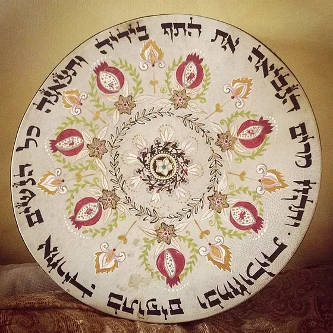

על מרים הנביאה - אם השירה בישראל
לכבוד המורה היקרה - תוף מרים במתנה🥁🎁
תמיד את מחפשת, על איזה דמות לספר לתלמידות.
סיפורי צדיקים יש בשפע,
אבל סיפורי צדיקות, קשה למצוא.
אשה תפקידה צניעות, ומעשיה צנועים.
והנה אור חדש על ציון תאיר,
קורות חייה של מרים הנביאה
אם השירה וההודיה בישראל
עשרות סיפורים מלאים מוסר השכל
על מנהיגת הנשים בדור המדבר.
האשה שהצליחה לסחוב אחריה את כולם
לשירה עמוקה מכל הלב.
שירה שגרמה להן שלא לחטוא בחטא המרגלים והעגל.
והתוף - התוף שרק אצל היהודים הוא נקרא תוף מרים
פרק מרתק ביותר על התוף והמתופפת - פרק ב'
פרק מדהים!!! מתאים גם לנערות.
החוברת מוגשת לפניכן במתנה.
מהדורה שניה שיצאה עתה לאור.
לחצו כאן להורדת החוברת - תוף מרים
ניתן לקבל את החוברת במשלוח עד הבית
ללא עלות משלוח
מחיר החוברת 20 ש''ח
לחץ כאן למלא פרטים למשלוח - ולתשלום בכרטיס אשראי
קוראים כותבים
כבוד הרה"ג טאוב שליט"א
אין בפי מילים לתאר את גודל השמחה באוצר שזכיתי לקבל באדיבותכם - חוברת "שירת מרים".
בשנה שעברה בער"פ החלטתי לחקור את דמותה של מרים הנביאה באמצעים דלים שעמדו לרשותי.
התפעלתי, התחברתי, וניתנו מס' שיעורים על כך, שבס"ד הצליחו עד מאוד.
מעולם לא ידעתי עד כמה עשיר החומר, ואילו אוצרות פז טמונים במקורותינו סביב דמותה ופועליה של מרים הנביאה.
וכשקראתי בער"פ השתא את המודעה הקצרה ב'יתד', חשבתי לעצמי כמה כבר אוכל להחכים.
אך הופתעתי בגדול.
נושא ראיית הטוב, האמונה, וההודיה. הוקפו ביסודיות ונערכו ונכתבו ביד אמן ובכשרון רב, עד לכדי יצירת מופת של ממש.
התענגתי על כל מילה, ובס"ד כבר היום נמסר שיעור (דרך הטלפון), לעשרות תלמידות שהגיבו בהתלהבות של ממש.
ההשראה ודרך החיים שנלמדים ממרים הנביאה, הם נכס אמיתי לכלל נשות ישראל.
אשריכם שפתחתם שער ענק לדמות כ"כ חשובה ומשמעותית בתולדות עמינו.
וזכות הרבים תעמוד לכם לעד.
בהתפעלות ותודה רבה
ר. קלויזנר

משפחת רייכנברג
מיוחד ממש!!
נהניתי לקרוא כל מילה.
היקף עצום.
יישר כח
תזכו למצוות.